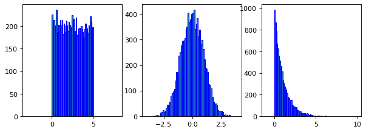

Machine Learning
Contents
Machine Learning#
EDA#
train/test split#
from sklearn.model_selectionlection import train_test_split
---------------------------------------------------------------------------
ModuleNotFoundError Traceback (most recent call last)
Input In [1], in <cell line: 1>()
----> 1 from sklearn.model_selectionlection import train_test_split
ModuleNotFoundError: No module named 'sklearn.model_selectionlection'
train_df, test_df = (
train_test_split(data, test_size=0.2,
random_state=123, shuffle=True, stratify=None)
X_train, y_train = train_df.drop(columns= ["target"]), train_df["target"]
X_test, y_test = test_df.drop(columns= ["target"]), train_df["target"]
Preprocessing#
Pipeline#
To make pipeline with custom named steps.
from sklearn.pipeline import Pipeline
Pipeline(
steps=[
("vect", CountVectorizer(max_features=5000)),
("clf", LogisticRegression(max_iter=5000)),
])
Pipeline(steps=[('vect', CountVectorizer(max_features=5000)),
('clf', LogisticRegression(max_iter=5000))])In a Jupyter environment, please rerun this cell to show the HTML representation or trust the notebook. On GitHub, the HTML representation is unable to render, please try loading this page with nbviewer.org.
Pipeline(steps=[('vect', CountVectorizer(max_features=5000)),
('clf', LogisticRegression(max_iter=5000))])CountVectorizer(max_features=5000)
LogisticRegression(max_iter=5000)
from sklearn.pipeline import make_pipeline
make_pipeline(
SimpleImputer(strategy="median"),
StandardScaler(),
KNeighborsRegressor()
)
Pipeline(steps=[('simpleimputer', SimpleImputer(strategy='median')),
('standardscaler', StandardScaler()),
('kneighborsregressor', KNeighborsRegressor())])In a Jupyter environment, please rerun this cell to show the HTML representation or trust the notebook. On GitHub, the HTML representation is unable to render, please try loading this page with nbviewer.org.
Pipeline(steps=[('simpleimputer', SimpleImputer(strategy='median')),
('standardscaler', StandardScaler()),
('kneighborsregressor', KNeighborsRegressor())])SimpleImputer(strategy='median')
StandardScaler()
KNeighborsRegressor()
Column Transformer#
from sklearn.compose import ColumnTransformer
from sklearn.impute import SimpleImputer
Numeric features#
from sklearn.preprocessing import StandardScaler
Categorical features#
from sklearn.preprocessing import OneHotEncoder
from sklearn.preprocessing import OrdinalEncoder
Text features#
from sklearn.feature_extraction.text import CountVectorizer
make_column_transformer(
(StandardScaler(), numeric_feats), # scaling on numeric features
("passthrough", passthrough_feats), # no transformations on the binary features
(OneHotEncoder(), categorical_feats), # OHE on categorical features
("drop", drop_feats), # drop the drop features
)
column_names = (
numeric_feats
+ passthrough_feats
+ ct.named_transformers_["onehotencoder"].get_feature_names_out().tolist()
)
column_names
make_column_transformer(
(
make_pipeline(SimpleImputer(), StandardScaler()),
numeric_feats,
), # scaling on numeric features
(
OrdinalEncoder(categories=[class_attendance_levels], dtype=int),
ordinal_feats,
), # Ordinal encoding on ordinal features
(
OneHotEncoder(drop="if_binary", dtype=int),
binary_feats,
), # OHE on categorical features
("passthrough", passthrough_feats), # no transformations on the binary features
(
OneHotEncoder(handle_unknown="ignore"),
categorical_feats,
), # OHE on categorical features
)
numeric_transformer = make_pipeline(SimpleImputer(strategy="median"), StandardScaler())
categorical_transformer = OneHotEncoder(handle_unknown="ignore")
preprocessor = make_column_transformer(
(numeric_transformer, numeric_features),
(categorical_transformer, categorical_features),
)
OneHotEncoder(handle_unknown="ignore", drop='if_binary', sparse=False)
OneHotEncoder(drop='if_binary', handle_unknown='ignore', sparse=False)In a Jupyter environment, please rerun this cell to show the HTML representation or trust the notebook.
On GitHub, the HTML representation is unable to render, please try loading this page with nbviewer.org.
OneHotEncoder(drop='if_binary', handle_unknown='ignore', sparse=False)
from sklearn.preprocessing import PolynomialFeatures
CountVectorizer(stop_words='english')
CountVectorizer(stop_words='english')In a Jupyter environment, please rerun this cell to show the HTML representation or trust the notebook.
On GitHub, the HTML representation is unable to render, please try loading this page with nbviewer.org.
CountVectorizer(stop_words='english')
Feature Selection#
from sklearn.feature_selection import RFECV
Classification Model#
Baseline Dummy Model#
from sklearn.dummy import DummyClassifier
from sklearn.dummy import DummyRegressor
DummyClassifier(strategy="most_frequent")
DummyClassifier(strategy='most_frequent')In a Jupyter environment, please rerun this cell to show the HTML representation or trust the notebook.
On GitHub, the HTML representation is unable to render, please try loading this page with nbviewer.org.
DummyClassifier(strategy='most_frequent')
DecisionTreeClassifier#
param_grid = {"max_depth": np.arange(1, 20, 2)}
from sklearn.tree import DecisionTreeClassifier
DecisionTreeClassifier(max_depth=5)
DecisionTreeClassifier(max_depth=5)In a Jupyter environment, please rerun this cell to show the HTML representation or trust the notebook.
On GitHub, the HTML representation is unable to render, please try loading this page with nbviewer.org.
DecisionTreeClassifier(max_depth=5)
KNN#
Especially prone to curse of dimensionality.
{"n_neighbors": np.arange(1, 50, 5)}
from sklearn.neighbors import KNeighborsClassifier
KNeighborsClassifier(n_neighbors=5)
KNeighborsClassifier()In a Jupyter environment, please rerun this cell to show the HTML representation or trust the notebook.
On GitHub, the HTML representation is unable to render, please try loading this page with nbviewer.org.
KNeighborsClassifier()
SVC RBF#
param_grid = {
"C": [0.001, 0.01, 0.1, 1, 10, 100],
"gamma": [0.001, 0.01, 0.1, 1, 10, 100],
}
from sklearn.svm import SVC
SVC(gamma=0.01)
SVC(gamma=0.01)In a Jupyter environment, please rerun this cell to show the HTML representation or trust the notebook.
On GitHub, the HTML representation is unable to render, please try loading this page with nbviewer.org.
SVC(gamma=0.01)
LinearRegression#
from sklearn.linear_model import LinearRegression
LogisticRegression#
from sklearn.linear_model import LogisticRegression
LogisticRegression()
LogisticRegression()In a Jupyter environment, please rerun this cell to show the HTML representation or trust the notebook.
On GitHub, the HTML representation is unable to render, please try loading this page with nbviewer.org.
LogisticRegression()
LightGBM Classifier#
from lightgbm.sklearn import LGBMClassifier
Regression Model#
from sklearn.tree import DecisionTreeRegressor
from sklearn.neighbors import KNeighborsClassifier, KNeighborsRegressor
Cross Validation#
Cross-validation: evaluating estimator performance - https://scikit-learn.org/stable/modules/cross_validation.html#stratification
cross_validate#
cross_val_score and cross_validate functions do not shuffle the data.
from sklearn.model_selection import cross_val_score, cross_validate
# list of validation scores
cross_val_score(model, X_train, y_train, cv=10)
# more powerful than cross_val_score
# access to both training and validation scores
cross_validate(model, X_train, y_train, cv=10, return_train_score=True)
scores = cross_validate(model, X_train, y_train, cv=10, return_train_score=True)
# table summarizing mean scores
pd.DataFrame(pd.DataFrame(scores).mean())

StratifiedKFold#
RidgeCV#
from sklearn.linear_model import RidgeCV
Hyperparameter Optimization#
RandomizedSearchCV#
from sklearn.model_selection import RandomizedSearchCV
RandomizedSearchCV
def display_heatmap(param_grid, pipe, X_train, y_train):
grid_search = GridSearchCV(
pipe, param_grid, cv=5, n_jobs=-1, return_train_score=True
)
grid_search.fit(X_train, y_train)
results = pd.DataFrame(grid_search.cv_results_)
scores = np.array(results.mean_test_score).reshape(6, 6)
# plot the mean cross-validation scores
mglearn.tools.heatmap(
scores,
xlabel="gamma",
xticklabels=param_grid["svc__gamma"],
ylabel="C",
yticklabels=param_grid["svc__C"],
cmap="viridis",
);
from scipy.stats import expon, lognorm, loguniform, randint, uniform, norm
from scipy.stats import expon, lognorm, loguniform, randint, uniform, norm
from matplotlib.pyplot import figure
figure(figsize=(9, 3), dpi=80)
#
y = uniform.rvs(0, 5, 10000)
bin = np.arange(-3,8,0.1)
plt.subplot(1,3,1)
plt.hist(y, bins=bin, edgecolor='blue')
#
y = norm.rvs(0, 1, 10000)
bin = np.arange(-4,4,0.1)
plt.subplot(1,3,2)
plt.hist(y, bins=bin, edgecolor='blue')
#
y = expon.rvs(0, 1, 10000)
bin = np.arange(-1,10,0.1)
plt.subplot(1,3,3)
plt.hist(y, bins=bin, edgecolor='blue')
plt.show()

hyperopt-sklearn
auto-sklearn
SigOptSearchCV
TPOT
hyperopt
hyperband
SMAC
MOE
pybo
spearmint
BayesOpt
### Interpretation
# by Varada Kolhatkar
from sklearn.metrics import ConfusionMatrixDisplay
pipe.fit(X_train, y_train)
disp = ConfusionMatrixDisplay.from_estimator(
pipe,
X_valid,
y_valid,
display_labels=["Non fraud", "fraud"],
values_format="d",
cmap=plt.cm.Blues,
colorbar=False,
);
from sklearn.metrics import confusion_matrix
predictions = pipe.predict(X_valid)
TN, FP, FN, TP = confusion_matrix(y_valid, predictions).ravel()
plot_confusion_matrix_example(TN, FP, FN, TP)
Precision-Recall curve
from sklearn.metrics import precision_recall_curve
precision, recall, thresholds = precision_recall_curve(
y_valid, pipe_lr.predict_proba(X_valid)[:, 1]
)
plt.plot(precision, recall, label="logistic regression: PR curve")
plt.xlabel("Precision")
plt.ylabel("Recall")
plt.plot(
precision_score(y_valid, pipe_lr.predict(X_valid)),
recall_score(y_valid, pipe_lr.predict(X_valid)),
"or",
markersize=10,
label="threshold 0.5",
)
plt.legend(loc="best");
## ROC curve
from sklearn.metrics import roc_curve
fpr, tpr, thresholds = roc_curve(y_valid, pipe_lr.predict_proba(X_valid)[:, 1])
plt.plot(fpr, tpr, label="ROC Curve")
plt.xlabel("FPR")
plt.ylabel("TPR (recall)")
default_threshold = np.argmin(np.abs(thresholds - 0.5))
plt.plot(
fpr[default_threshold],
tpr[default_threshold],
"or",
markersize=10,
label="threshold 0.5",
)
plt.legend(loc="best");